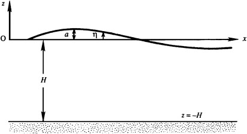

For consistency, this condition should also be simplified for small-slope waves by dropping the nonlinear term \( |\nabla \phi|^2 \) in the relevant Bernoulli equation \(\frac{\partial \phi}{\partial t} + \frac{1}{2} |\nabla \phi|^2 + gz + \frac{p}{\rho} = \text{constant}\): \[ \frac{\partial \phi}{\partial t} + \frac{p}{\rho} + gz \cong 0 \] where the Bernoulli constant has been evaluated on the undisturbed liquid surface far from the surface wave

The Bernoulli constant has been evaluated on the undisturbed liquid surface far from the surface wave. Evaluating \(\frac{\partial \phi}{\partial t} + \frac{p}{\rho} + gz \cong 0\) on \( z = \eta \) and applying \((p)_{z = \eta} = 0\) produces
\[
\left( \frac{\partial \phi}{\partial t} + \frac{p}{\rho} + gz \right)_{z = \eta} \cong \left( \frac{\partial \phi}{\partial t} \right)_{z = 0} + g \eta \cong 0, \quad \text{or} \quad \left( \frac{\partial \phi}{\partial t} \right)_{z = 0} \cong -g \eta
\]
The first approximate equality follows because \( \boxed{(\partial \phi / \partial t)_{z = 0}} \) is the first term in a Taylor series expansion of \( (\partial \phi / \partial t)_{z = \eta} \) in powers of \( \eta \) about \( \eta = 0 \)
It is consistent with \(\boxed{\left( \frac{\partial \phi}{\partial z} \right)_{z = 0} \cong \frac{\partial \eta}{\partial t}}\) for the kinematic boundary condition